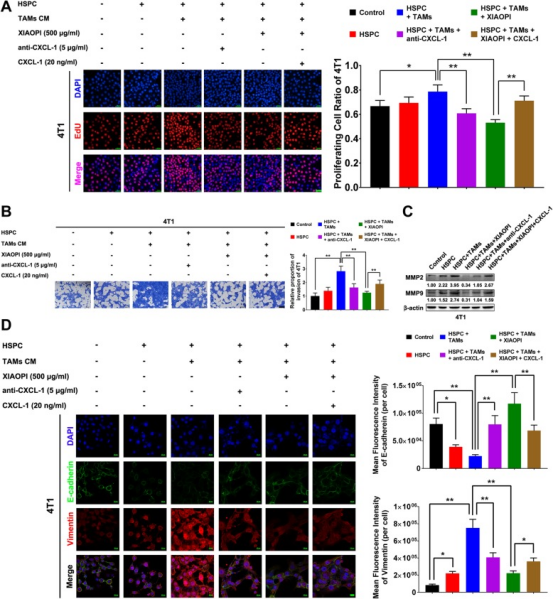

消癖颗粒通过抑制TAMs/CXCL1信号通路抑制乳腺癌转移前微环境的形成
郑轶枫1，2，王能1，3，王胜奇1，2，杨博文1，2，司徒红林1，2，钟丽丹4，林毅1，2，王志宇1，2，3，4。
DOI https://doi.org/10.1186/s12964-020-0520-6
Cell Communication and Signaling ( IF 5.712 )
摘要
背景
近年来的研究表明，肿瘤转移前微环境(PMN)是介导肿瘤转移的先决条件。此前我们证实，消癖颗粒可通过抑制肿瘤相关巨噬细胞(TAMs)分泌CXCL1来抑制乳腺癌肺转移。本文旨在探讨消癖颗粒预防乳腺癌PMN形成的作用及其分子机制。
方法
用qPCR和蛋白质印迹法检测肿瘤相关抗原CXCL1的表达。采用CCK8和EdU染色法检测消癖颗粒对共培养体系中TAMs和4T1增殖的影响。采用transwell实验研究了消癖颗粒对HSPCs和4T1侵袭能力的影响。将4T1细胞接种于Balb/c小鼠乳腺脂肪垫皮下，构建乳腺癌异种移植物，用荧光素酶显像监测肺转移。免疫荧光法检测肺组织上皮细胞间充质细胞转化过程和PMN的形成。采用流式细胞仪检测消癖颗粒对造血干/祖细胞(HSPCs)、髓系抑制性细胞(MDSCs)的影响。
结果
结果发现消癖颗粒能抑制M2表型巨噬细胞的增殖和极化，并呈剂量依赖性地降低CXCL1的表达。消癖颗粒对M1表型的影响不明显。TAMs/CXCL1信号通路可以刺激c-Kit+/Sca-1+ HSPCs的补充和分化为CD11b+/Gr-1+ MDSCs，这是促进PMN形成的象征性事件。此外，消癖颗粒能有效抑制HSPCs的激活，抑制HSPCs与TAMs共培养系统诱导的乳腺癌细胞4T1的增殖和转移，提示消癖颗粒在体外对PMN的形成有明显的抑制作用。乳腺癌异种移植实验进一步证实，消癖颗粒能抑制乳腺癌PMN的形成和随后的肺转移。消癖颗粒治疗组骨髓内和肺组织内的HSPCs数量均明显下降。而CXCL1的过表达可以减轻消癖颗粒的抑制作用。
结论
综上所述，我们的研究为消癖颗粒在预防乳腺癌PMN形成中的应用提供了临床前证据，并强调TAMs/CXCL1作为PMN靶向治疗的潜在治疗策略。
关键词：消癖颗粒，转移前微环境，肿瘤相关巨噬细胞，CXCL1，乳腺癌
背景
乳腺癌是全世界妇女中最常见的恶性肿瘤，平均发病率为21.6/10000[1]。虽然乳腺癌的诊断和治疗已经取得了很大进展，但远处转移一直是影响临床预后的生命威胁事件。据报道，6%的患者首次诊断为转移性乳腺癌，20-50%的原发性乳腺癌患者在3-10年后出现远处转移[2]。因此，阐明乳腺癌转移的分子机制和制定靶向治疗策略已成为全球肿瘤学家迫切需要解决的问题。
自1889年Paget等人首次提出“种子和土壤”理论以来，越来越多的研究表明，原发肿瘤与转移前部位的微环境密切相关。2005年，Kaplan等人进行了一项开创性的研究，通过招募骨髓来源的VEGFR1+祖细胞，证明了原发肿瘤细胞分泌的因子形成了肿瘤转移前微环境(PMN)【3】。从那时起，非恶性细胞的关键作用和促进PMN形成的因素受到了广泛的关注。例如，发现缺氧条件促进了骨髓源性细胞(BMDCs)在肺组织中的补充，最终降低了PMN的NK细胞毒性【4】。此外，Jagged2在缺氧条件下在骨髓中不受控制，随后通过激活Notch信号增强了肿瘤干细胞的自我更新能力【5】。此外，非编码RNA作为肿瘤来源的分子成分，诱导PMN的形成。据报道，乳腺癌分泌的miR-122抑制微环境细胞对葡萄糖的摄取，最终支持PMN的建立[6]。最近的研究结果还表明，微泡和从癌细胞释放的外泌体有利于在各种恶性肿瘤中形成PMN[7]。研究发现黑色素瘤分泌的外泌体通过间充质上皮细胞转化使骨髓祖细胞转变为前转移型细胞[8]。更重要的是，基质细胞高度牵连PMN的形成[9]。据报道中性粒细胞促进卵巢癌大网膜中PMN的形成[10]。肿瘤相关的巨噬细胞(TAMs)分泌的CXCL1可以招募CXCR2+髓系抑制性细胞(MDSCs)促进肝脏PMN的形成[11]。综上所述，PMN理论将我们的注意力从肿瘤细胞的杀伤策略转移到肿瘤转移预防的生态微环境成份调控上。
值得注意的是，PMN过程可分为3个阶段:(1)肿瘤分泌的可溶性细胞因子或组分进入循环；(2)免疫抑制细胞在骨髓中的激活和定向招募；(3)PMN的细胞和基质重塑[12]。因此，PMN的形成是一个涉及多个器官、多种细胞和多个靶点的整体过程。同时，中医也以其整体的观点来看待疾病的治疗和预防。近年来，大量研究表明，中药不仅可以通过杀死癌细胞来抑制肿瘤的生长和转移，而且可以改善肿瘤或远端器官的免疫抑制微环境。一些研究表明，中医方剂能够通过增强T细胞的免疫功能，激活单核巨噬细胞和NK细胞，提高树突状细胞的抗原呈现能力和抑制肿瘤免疫逃逸等方式来预防转移【13-15】。我们以前的研究发现消癖颗粒能抑制乳腺癌的肺转移。网络药理学分析结合实验验证发现消癖颗粒主要通过抑制TAMs/CXCL1通路发挥抗癌作用[16]。但是，消癖颗粒对抑制PMN形成的作用及其机制尚不清楚。
本研究发现消癖颗粒能抑制TAMs/CXCL1信号转导，降低HSPCs的活化和分化为MDSCs，最终抑制乳腺癌细胞的增殖和转移。体内研究也表明消癖颗粒能抑制乳腺癌的生长和转移。更重要的是，消癖颗粒通过抑制HSPCs在肺组织中的招募和MDSCs的蓄积而抑制PMN的形成。本研究不仅为消癖颗粒在预防乳腺癌PMN形成中的应用提供了依据，而且强调了TAMs/CXCL1作为预防乳腺癌转移潜在治疗靶点的重要作用。
方法
细胞培养和诱导
小鼠乳腺癌细胞系4T1和小鼠巨噬细胞系Raw264.7来源于美国菌种保藏中心。4T1细胞和Raw264.7细胞分别在DMEM和RPMI1640培养基中培养，并添加10%胎牛血清。所有细胞在含有5%CO2的湿化培养箱中保持在37℃。用100ng/ml脂多糖和100ng/mlIFN-γ诱导RAW264.7进入M1表型。应用IL-4和IL-13分别诱导巨噬细胞RAW264.7向M2表型转化。
消癖颗粒的制备及质量控制
采用回流提取法，从淫羊藿、肉苁蓉、益母草、丹参、郁金、莪术、女贞子、制何首乌、牡蛎、鳖甲10味中药的混合物中提取消癖颗粒。采用高效液相色谱指纹图谱法对其进行质量控制。详细的制备和质量控制方法以前已经报道过【16】。
小鼠骨髓制备造血干/祖细胞(HSPCs)
在无菌条件下，用注射器清除股骨和胫骨中的小鼠骨髓细胞。随后，根据谱系细胞耗竭试剂盒(130-090-858，Miltenyi Biotec China，Guangzhou，China)和CD117微珠(130-091-224，Miltenyi Biotec China，Guangzhou，China)的生产方案，用MACS分离器分离Lineage-细胞和c-Kit+细胞。采用免疫组织化学方法(MACS)分离细胞，用c-Kit(12-1171-81，Thermo Fisher Scientific，上海)和Sca-1(11-5981-81，Thermo Fisher Scientific，上海)抗体进行孵育，流式细胞仪分离。HSPC细胞被鉴定为c-Kit+ 和Sca-1+细胞群。
蛋白质印迹法
细胞按照指示处理，然后用RIPA(中国上海碧昂斯生物技术)进行裂解。根据制造商的说明书，使用Bicinchoninic Acid Kit试剂盒(中国上海Sigma-Aldrich)对蛋白质浓度进行定量。等量的蛋白质(50微克)载入SDS-PAGE电泳，转移到聚偏二氟乙烯微孔膜(Millipore Billerica，MA)。用初级抗体探测信号，用二级抗体扩增。主要抗体包括ARG1(DF6657，Affinity Biosciences，俄亥俄州辛辛那提)、iNOS(18985-1-AP，proteintech，罗斯蒙特，IL，USA)、CXCL1(AF5403，Affinity Biosciences，俄亥俄州辛辛那提)、CXCR2(20634-1-AP，proteintech，罗斯蒙特，IL，USA)、β-肌动蛋白抗体细胞信号技术，丹弗斯，MMP2(A6247，美国波士顿剑桥非克隆技术学院)，MMP9(10375-2-AP，美国罗斯蒙特蛋白质技术学院)。最后，通过ECL先进试剂(上海塔农科技有限公司)对这些条带进行了成像。
流式细胞仪分析
在1×106细胞密度的100µl PBS溶液中分离、洗涤和悬浮细胞。检测M2极化、FITC结合的F4/80抗体(SC-71085，Santa Cruz Biotechnology，CA，USA)、PE结合的CD206抗体(141,705，Biolegend，San Diego,CA,USA)、PE-结合的CD206抗体(17-4801-80，Thermo Fisher Scientific，Hudson，USA)、APC结合的CD86抗体(558,703，BD Biosciences，San Jose，CA，USA)。ARG1抗体(DF6657，Affinity Biosciences，Cincinnati，OH，USA)。Alexa Fluor488探针与Arg1抗体结合。用Alexa Fluor488Gr-1抗体(108,419，Biolegend, 加利福尼亚州圣地亚哥)和PE抗鼠/人 CD11b抗体(101,207，Biolegend，加利福尼亚州圣地亚哥)进行MDSCs分析。用CD45-PE-Cy7(25-0451-82，Thermo Fisher Scientific，Hudson,USA)、FITC结合F4/80抗体(SC-71085，Santa Cruz Biotechnology，Santa Cruz，CA，USA)和PE-CD206抗体(141,705，Biolegend，加利福尼亚州圣地亚哥)培养小鼠乳腺肿瘤和肺损伤的TAMs。利用流式细胞仪分析FITC共轭Sca-1(11-5981-81，Thermo Fisher Scientific，Hudson，USA)和PE-共轭c-Kit(12-1171-81，Thermo Fisher Scientific，Hudson，USA)的表面标记物鉴定HSPCs。培养后，用PBS清洗细胞，然后放入FACSAria III流式细胞仪(BD Biosciences，San Jose，CA，USA)。
细胞活力
采用CCK-8法检测细胞活性。诱导M1和M2表型巨噬细胞以3×103细胞密度接种于96孔板中。细胞贴壁后分别用消癖颗粒浓度梯度处理24、48和72h。根据生产厂家的说明书，采用8号CCK-8试剂(中国上海碧昂斯生物技术有限公司)测定细胞活力。进行了三个独立的重复实验。
实时-定量PCR分析
用RNAiso Plus试剂(日本Takara BIO)提取总RNA，并按照制造商的说明，使用primeScriptm RT试剂盒和gDNA擦除器(日本Takara BIO)逆转录成互补cDNA。根据生产商的说明，使用SYBR Premix Ex TaqTM II试剂盒(日本Takara BIO)，在应用生物系统ViiA7实时PCR系统(Thermo Fisher Scientific,Hudson，USA)上进行RT-PCR。小鼠β-肌动蛋白的引物序列分别为5′-GGAGGGGGTTGAGGTGTT- 3′(正向)和5′-GTGTGCACTTTTATTGGTCTCAA-3′(反向)。小鼠CXCL1基因的引物序列分别为5′-GACTCCAGCCACACTCCAAC-3′(正向)和5′-TGACAGCGCAGCTCATTG-3′(反向)。采用2 -ΔΔCt方法比较各组大鼠的相对mRNA水平。
Transwell侵袭试验
为了探讨HSPCs在不同干预条件下的流动趋势，进行了Transwell侵袭试验。简单地说，造血干/祖细胞(HSPCs)以2×105细胞的密度在上面的transwell室中播种。然后分别用500μg/ml消癖颗粒、TAMs条件培养基(CM)和20ng/mlCXCL1处理HSPCs。培养24h后，用4%多聚甲醛固定渗透过滤器的细胞，然后用0.1%考马斯蓝染色。同时对进入下室的造血干/祖细胞进行计数。对于4T1和HSPCs的共培养，采用24孔transwell共培养体系。简而言之，将密度为5×104的4T1细胞，放置在上面的transwell室中。将2×105细胞密度的HSPC接种于下腔室。。Transwell插入物由可渗透膜隔开，允许介质和可溶性分子的自由交换。然后，按预先排列的方法，在4T1细胞中分别加入TAMs的CM、500μg/ml消癖颗粒、20ng/mlCXCL1或50ng/mlCXCL1中和抗体。同样，培养24小时后，渗透滤网的4T1细胞，用0.1%考马斯蓝染色。
EdU检测
生长期的4T1细胞接种于35mm激光共聚焦培养皿中，培养密度为5×104。然后，对照培养基、500μg/ml消癖颗粒、TAMs的CM、20ng/mlCXCL1或按预先排列的50ng/ml CXCL1中和抗体处理细胞。处理24h后，用含50μM EdU试剂的培养基置换每个孔，培养2h。然后用PBS洗涤3次，室温下用4%甲醛固定30min。然后用0.5% Triton X-100进行渗透。最后，在室温条件下，用Apollo染色30分钟，用PBS冲洗，激光扫描共聚焦显微镜观察。
免疫荧光分析
对于细胞免疫荧光，细胞被接种在35mm的激光共聚焦培养皿上。处理后，用4%多聚甲醛固定20min，用PBS洗涤3次，用0.25% Triton X-100渗透20min，室温下用5%BSA封闭30min。用E-cadherin抗体(20874-1-AP，proteintech，罗斯蒙特，IL，USA)和vimentin抗体(10366-1-AP，proteintech，罗斯蒙特，IL，USA)在4℃通宵孵育，然后用Alexa Fluor 488-anti-rabbit IgG(4412，Cell Signaling Technology，丹弗斯，MA，USA)和Alexa Fluor 555-conjuded-anti-rat IgG孵育(4417，Cell Signaling Technology，丹弗斯,MA,USA)2h。对于组织免疫荧光,冷冻组织切片与上述处理相同，并在4℃条件下通宵培养Alexa Fluor 488Gr-1抗体(108,419，Biolegend, 加利福尼亚州圣地亚哥)和Alexa Fluor 594 CD11b抗体(101,207，Biolegend，加利福尼亚州圣地亚哥)。另外，CK-19抗体(10712-1-AP，Proteintech，罗斯蒙特，IL，USA)也同时孵育，然后与Alexa Fluor 647 conjugated-anti-rabbit IgG(4414，Cell Signaling Technology，丹弗斯，MA)的荧光抗体结合。用DAPI(Sigma-Aldrich，上海)在室温下染色20分钟。最后用德国耶拿蔡司公司LMS710共聚焦显微镜观察荧光。
动物实验
选用北京维特里弗实验动物技术有限公司生产的5周龄雌性Balb/c小鼠。所有体内实验均经广东省中医医院动物护理和使用机构委员会审核通过。小鼠在广东省中医院实验动物中心无菌条件下饲养，环境温度为20-25℃，相对湿度为45-50%，给予无菌食物和饮水。饲养设施维持在12小时的光照-黑暗周期。为建立小鼠乳腺癌肺转移模型，将荧光素酶基因标记的4T1(4T1-Luc)接种于小鼠乳腺脂肪垫皮下，密度为2×106。小鼠随机分为6组(n=12)，分别为生理盐水(灌胃)、消癖颗粒(灌胃1g/kg/d)、TAMs(联合注射4T1-Luc细胞和M2表型RAW264.7的比例为1:3)、TAMs+消癖颗粒(4T1-Luc和M2表型RAW264.7的联合注射)、shCXCL1/TAMs(4T1-Luc和M2表型RAW264.7共注射CXCL1基因敲除))、rCXCL1/TAMs+消癖颗粒(4T1-Luc与M2表型RAW264.7联合注射+CXCL1过表达，然后进行消癖颗粒治疗)。在整个治疗过程中，每3天给小鼠称重，并用卡尺测量它们的肿瘤。计算肿瘤体积(v)的公式为:v=(长度)×(宽度)2/2。腹腔注射D-luciferin(美国波士顿PerkinElmer)150mg/kg进行发光显像。每周用IVISSpectrum系统(PerkinElmer，Boston，USA)对小鼠进行肺转移监测。6周后，对小鼠实施安乐死，切除肿瘤和肺。原代细胞分离自新鲜肿瘤和肺部，并通过如上文所示流式细胞仪进行TAMs分析。另外，从接种第二周开始，每周用流式细胞仪检测小鼠骨髓中HSPC的募集情况。苏木精-伊红染色检测肺组织微转移。流式细胞仪检测肿瘤和肺中MDSCs的数量。
苏木精-伊红染色
肿瘤标本在4%的多聚甲醛中固定24小时，然后按照我们先前描述的方案进行处理。苏木精-伊红染色是根据制造商的说明使用Hematoxylin-伊红染色试剂盒(中国上海碧昂斯生物技术公司)进行的【17】。
统计分析
数据采用平均标准差(SD)。所有的统计分析都是使用SPSS20.0软件(美国雅培，美国芝加哥)进行的。采用单因素方差分析和T检验进行多组比较。对重复测量数据进行方差分析。P<0.05为统计学意义。
结果
消癖颗粒抑制M2巨噬细胞极化及CXCL1表达
巨噬细胞可被IL-4、TGF-β等细胞因子诱导分化为M2表型(通常称为肿瘤相关性巨噬细胞，TAMs)。因此，我们首次应用IL-4和IL-13在体外刺激RAW264.7进入M2表型。结果表明，M1标记物iNOS水平下降，而M2标记物ARG1水平上升。同时，流式细胞仪分析显示M2抗原CD206比例升高(图1A)。
我们之前的研究表明消癖颗粒可能通过阻断TAMs/CXCL1信号转导途径抑制乳腺癌的生长和肺转移[16]。因此，我们需要证实消癖颗粒对TAMs的活力、极化和CXCL1表达的影响。结果发现，消癖颗粒对巨噬细胞M2表型RAW264.7的增殖具有时间和剂量依赖性的抑制作用。但与M2巨噬细胞不同，消癖颗粒对M1巨噬细胞的增殖无明显抑制作用，提示消癖颗粒可能对M2巨噬细胞有选择性，而不是一般性免疫毒性(图1B)。
另一方面，随着消癖颗粒剂量的增加，M2巨噬细胞CD163、CD206和Arg1的表达逐渐下调，提示消癖颗粒阻断了M2巨噬细胞的极化(图1C)。此外，消癖颗粒还能增加巨噬细胞CD86的表达，提示消癖颗粒也可能促进M2巨噬细胞的复极化。
由于CXCL1被证明是TAMs分泌水平最高的趋化因子，我们还发现消癖颗粒剂量依赖性地抑制M2表型巨噬细胞CXCL1的转录和表达(图1D&E)。
以上结果表明，消癖颗粒在体外能有效抑制TAMs/CXCL1信号转导。
图1消癖颗粒抑制M2巨噬细胞的极化和CXCL1的表达。
A. 40ng/ml IL-4和40ng/ml IL-13诱导RAW264.7表型改变。
B.消癖颗粒对M1和M2表型RAW264.7增殖的影响。
C.消癖颗粒对M2表型的表面标志物CD206、CD163和Arg1均呈剂量依赖性下调，而M1标志物CD86则呈剂量依赖性上调。
D.消癖颗粒剂量依赖性抑制M2表型RAW264.7细胞CXCL1转录水平。
E.消癖颗粒剂量依赖性抑制M2表型RAW264.7细胞CXCL1的表达。(一式三份的实验结果分别为:平均值±SD，*p<0.05，**p<0.01与对照相比，#p<0.01,对比24h，48h，72h三个时间点的比较。)
消癖颗粒通过抑制TAMs/CXCL1抑制HSPCs募集和MDSCs分化
造血干/祖细胞（HSPCs）在微环境形成中起着重要的调节作用。在此，我们使用MACS结合FACS策略从小鼠骨髓中分离出带有Lineage-/c-Kit+/Sca-1+标记的HSPCs(图2A)。
因为HSPCs的募集和动员依赖于肿瘤或抑制性免疫细胞分泌的趋化因子，并且CXCL1被证实能促进远处转移[11,18]，因此，我们检测CXCL1对HSPCs分化的影响。流式细胞仪检测结果表明，CXCL1能逐渐增加HSPCs中CD11b+/Gr-1+ MDSCs的数量(图2B)。
另外，条件培养基(CM)能够提高HSPCs的侵袭能力，表明TAM能够激活HSPCs的定向募集。与此相反，消癖颗粒显著阻断了TAMs诱导的HSPCs侵袭增强，而CXCL1进一步缓解了这种抑制，提示CXCL1是TAMs分泌的一种关键的趋化因子，参与了HSPCs的招募(图2C&D)。
此外，还发现TAMs-CM能促进HSPCs向MDSCs的分化，并被消癖颗粒阻断。同样，CXCL1处理降低了消癖颗粒对MDSCs分化的抑制作用(图2E)。
由于MDSCs被认为是促进PMN形成的必要因素，这些研究结果表明，消癖颗粒可能通过抑制HSPCs的招募和肾上腺皮质干细胞的分化而有效抑制PMN的形成。
图2消癖颗粒通过抑制TAMs/CXCL1抑制HSPCs的招募和MDSCs的分化。
A.造血干/祖细胞制备过程流程图。简单地说，在无菌条件下用注射器冲洗小鼠骨髓细胞。随后进行谱系-/c-Kit+雌性细胞分选。最后，采用流式细胞仪(FACS)分别收集Sca-1+/c-Kit+ HSPCs。
B.CXCL1剂量依赖性地增加CD11b+/Gr-1+细胞的比例，促进HSPCs向MDSCs的分化。
C-D.消癖颗粒能明显减轻TAMs-CM诱导的HSPCs的运动，CXCL1能明显减轻消癖颗粒对TAMs-CM诱导的HSPCs运动的抑制。
E.消癖颗粒抑制TAMs-CM诱导的HSPCs向CD11b+/Gr-1+MDSCs的分化，并可通过CXCL1处理降低HSPCs向CD11b+/Gr-1+MDSCs的分化。(实验结果为平均值±SD，*p<0.05，**p<0.01)。
消癖颗粒抑制TAMs和HSPCs共培养的4T1细胞增殖和侵袭
以上结果表明，消癖颗粒可能通过抑制MDSCs而阻断肿瘤免疫抑制微环境的形成。
在模拟肿瘤微环境(TME)的条件下，探讨该方对肿瘤细胞增殖和转移的影响是有意义的。
将HSPCs和TAMs-CM单独或联合添加到小鼠肿瘤细胞系4T1的上清液中。EdU细胞增殖实验表明，HSPCs单独作用对4T1细胞增殖的影响不大，但TAMs-CM处理的HSPCs能显著增强这种影响。当CXCL1中和抗体加入共培养体系后，其促增殖作用被抑制，表明CXCL1是TAMs-CM激活HSPCs介导的癌细胞增殖的关键趋化因子。值得注意的是，经TAMs-CM处理的HSPCs对肿瘤细胞的增殖促进作用在消癖颗粒注射后被明显抑制，并随后被CXCL1过表达所逆转(图3A)。
这些发现进一步证实了TAMs/CXCL1信号通路是调节HSPCs功能的关键趋化因子，并证实了消癖颗粒的抗肿瘤作用。
Transwell实验还发现，TAMs-CM处理的HSPCs能够增强4T1细胞的侵袭能力，并且能够被消癖颗粒或CXCL1中和抗体抑制。同样，CXCL1过表达可以缓解消癖颗粒的抑制作用(图3B)。
此外，消癖颗粒还能抑制TAMs-CM处理的HSPCs诱导的MMP2和MMP9表达上调，从而减弱转移前微环境形成过程中的细胞外间质重构。同样，外源性CXCL1可以部分恢复消癖颗粒抑制的MMP2和MMP9水平，提示消癖颗粒可能以CXCL1依赖的方式抑制乳腺癌细胞的侵袭(图3C)。
免疫荧光实验进一步表明，经TAMs-CM处理的HSPCs促进了间充质标记波形蛋白的表达，并下调了上皮标记E-cadherin的水平。相反，消癖颗粒通过抑制CXCL1抑制EMT过程(图3D)。
这些结果提示消癖颗粒能抑制TME中癌细胞的增殖和转移能力，从而抑制PMN的形成。

图3消癖颗粒抑制TAMs和HSPCs共培养的4T1细胞增殖和侵袭。
A. EdU细胞增殖实验表明HSPCs与TAMs-CM共培养可促进4T1细胞的增殖，而消癖颗粒或CXCL1中和抗体(比例尺表示50μm)则可抑制4T1细胞的增殖。
B. HSPCs与TAMs-CM联合培养可明显促进4T1细胞的侵袭，而消癖颗粒和CXCL1中和抗体对4T1细胞的侵袭有抑制作用。同时，外源CXCL1处理可逆转消癖颗粒的抑制作用(比例尺表示200μm)。
C. HSPCs和TAMs-CM共培养能显著促进MMP2和MMP9的表达，而消癖颗粒和CXCL1中和抗体能显著降低MMP2和MMP9的表达。外源性CXCL1可部分恢复消癖颗粒所抑制的MMP2和MMP9水平。
D. 4T1细胞(每个细胞)荧光强度的定量分析表明，消癖颗粒和CXCL1中和抗体对间充质标记波形蛋白有抑制作用，并与HSPCs和TAMs-CM共培养上调。相比之下，上皮标志物E-cadherin的表达增强(比例尺表示20μm)。(实验结果为平均值±SD，*p<0.05，**p<0.01)。
消癖颗粒抑制乳腺癌肺转移
为了验证体外实验结果，我们将荧光素酶标记的4T1细胞注射到BALB/c小鼠乳腺脂肪垫中，进一步评价消癖颗粒的体内抗转移作用。从实验第一周开始至实验结束，采用口服给药法，每日1g/kg给药。每周监测乳腺癌肺转移，苏木精-伊红染色观察肺微转移形成情况。此外，还检测了小鼠骨髓和肺组织中的造血干/祖细胞的比例(图4A)。
每3天测量一次肿瘤体积。结果表明，消癖颗粒对肿瘤的生长有明显的抑制作用，对TAMs诱导的促癌作用有抑制作用。更重要的是，CXCL1过表达显著降低了消癖颗粒的抑制作用(图4B-D)。
荧光素酶显像实验进一步表明，消癖颗粒或CXCL1基因敲除能显著抑制TAMs诱导的癌细胞转移，并且消癖颗粒的抗转移作用被CXCL1基因在TAMs中的过表达所消除(图4E)。
这些结果进一步表明，TAMs/CXCL1是消癖颗粒抑制乳腺癌转移的关键靶点。因此，我们通过流式细胞仪检测消癖颗粒对肿瘤细胞比例的影响。结果表明，消癖颗粒和CXCL1基因敲除能显著抑制肿瘤组织中的F4-80+CD206+细胞，即使与4T1细胞共同注射也能显著抑制F4-80+CD206+细胞的增殖。同样，过表达CXCL1的TAMs联合注射缓解了消癖颗粒对TAMs群体的抑制作用(图4F)。
另一方面，消癖颗粒也能抑制肿瘤组织中的MDSCs数量，抑制肿瘤组织中的CXCL1基因表达。重要的是，消癖颗粒可以抑制TAMs诱导的MDSCs数量增加，这一点随后被CXCL1过表达所逆转(图4G)。
结果提示TAMs/CXCL1在介导消癖颗粒的抗癌和抑制转移作用中起关键作用，这与肿瘤组织中TAMs和MDSCs的下调密切相关。
图4消癖颗粒抑制乳腺癌肺转移，降低肿瘤内MDSCs和TAMs的比例。
A.动物模型建立、药物使用和参数测试示意图。
B.不同治疗方法下乳腺肿瘤的代表性影像。
C-D.消癖颗粒对乳腺癌细胞生长有抑制作用，并能抑制TAMs联合注射诱导的促生长作用。同时发现TAMs中CXCL1基因敲除可抑制TAMs对乳腺癌的生长刺激作用，而CXCL1基因过表达能够减轻消癖颗粒的抑制作用。
E.消癖颗粒对乳腺癌肺转移具有抑制作用，并能抑制TAMs联合注射诱导的促转移作用。同时发现TAMs中CXCL1基因的敲除可抑制TAMs对乳腺癌转移的刺激作用，而CXCL1基因在TAMs中的过表达则可抑制消癖颗粒的抑制转移作用。
F.消癖颗粒对原发性乳腺肿瘤或TAMs刺激的乳腺肿瘤中的M2型巨噬细胞有抑制作用，而在TAMs中的CXCL1基因表达下调可以降低M2表型群体的数量，而在TAMs中的CXCL1过表达则可以缓解消癖颗粒的抑制作用。
G.消癖颗粒能抑制4T1细胞或TAMs刺激诱导的MDSCs的数量，CXCL1在TAMs中的表达下调，而CXCL1在TAMs中的过表达可缓解消癖颗粒的抑制作用。(结果表示为平均值±SD，*p<0.05，**p<0.01)。
消癖颗粒通过抑制CXCL1介导的MDSCs激活抑制TAMs诱导的小鼠肿瘤微环境形成
PMN被认为是促进转移性病灶形成的必要条件。
为了研究消癖颗粒对肿瘤转移前微环境形成的影响，用Gr-1和CD11b标记MDSCs，CK19标记肿瘤细胞。
免疫荧光结果发现，TAMs联合注射早在第2周开始诱导CD11b+Gr1+ MDSCs蓄积，并伴有CK19+癌细胞浸润肺PMN。但是，消癖颗粒或CXCL1基因敲除可明显阻断TAMS诱导的MDSCs积累和肿瘤细胞浸润。相反，CXCL1在TAMs中的过度表达逆转了消癖颗粒对PMN的抑制作用(图5A)。
在肿瘤进展的第2-4周，CD11b+Gr1+MDSCs在肺组织中积累越多，CK19+乳腺癌细胞浸润越多，提示PMN的形成为肿瘤细胞种植提供了一个良好的条件。两组之间的统计学差异在第2-4周保持一致(图5B)。
此外，我们注意到在第2-4周各组均未见明显的肺转移病灶，如图5C所示，但HE染色显示，消癖颗粒能抑制TAMS诱导的肺微转移灶的形成，进一步证实消癖颗粒能通过抑制PMN的形成而阻止肺转移(图5D)。
图5消癖颗粒通过抑制CXCL1介导的MDSCs活化抑制TAMs诱导的小鼠PMN形成。
A.接种后第2至4星期的小鼠肺组织免疫荧光。Gr-1+CD11b+标记MDSCs和CK19+标记肿瘤细胞。消癖颗粒能明显抑制肺组织CD11b+/Gr1+MDSCs的积累，而CXCL1在肺组织中的过度表达则能明显减轻消癖颗粒的抑制作用。
B.小鼠2-4周肺组织Gr-1、CD11b和CK19荧光强度的统计学分析。
C.第2-4周小鼠肺组织大体观察。未发现明显的肺转移性病灶。
D.苏木精-伊红染色法检测2-4周小鼠肺组织。消癖颗粒对TAMs诱导的肺微转移有抑制作用。(结果表示为平均值±SD，*p<0.05，**p<0.01)。
消癖颗粒抑制HSPCs招募和向MDSCs分化
以上结果表明，消癖颗粒能抑制MDSCs在靶器官的活化和积累，因为据报道MDSCs与HSPCs有区别，探讨TAMs接种或消癖颗粒处理后HSPCs的变化是有意义的。
如图6A和B所示，与阴性对照组相比，接种肿瘤细胞后第2-4周HSPCs数量明显增加。更重要的是，TAMs共注射进一步激活了HSPCs，而CXCL1的敲除可以抑制这一过程。有趣的是，消癖颗粒对肿瘤细胞诱导或TAMs诱导的HSPCs富集均有明显的抑制作用，而CXCL1过表达降低了消癖颗粒对HSPC活化的抑制作用，进一步说明TAMs/CXCL1是消癖颗粒抗PMN作用的重要信号传导途径。
流式细胞仪分析显示，肺组织中的MDSCs数量在第2-4周与HSPCs数量变化趋势基本一致，与骨髓中HSPCs数量变化趋势一致。接种TAMs可以诱导MDSCs群体，CXCL1基因敲除可以下调MDSCs群体。同时，消癖颗粒能抑制TAMs诱导的MDSCs增高，CXCL1过表达阻断消癖颗粒的治疗作用(图6C和D)。
结论:消癖颗粒能抑制HSPCs的增殖和分化，从而抑制PMN的形成，防止乳腺癌的转移。
图6消癖颗粒抑制HSPCs的募集和向MDSCs的分化。
A-B.流式细胞仪检测骨髓中HSPCs的数量。消癖颗粒可阻断TAMs诱导的HSPCs升高，但可通过CXCL1过表达缓解。
C-D流式细胞仪检测肺组织中MDSCs的数量。从第2周到第4周消癖颗粒对肺组织CD11b+/Gr1+MDSCs的积累有明显的抑制作用，而通过TAMs中CXCL1的过度表达能够缓解。(结果表示为平均值±SD，*p<0.05，**p<0.01)
讨论
最近的研究表明PMN的形成是决定癌转移部位和时间的关键因素[19,20]。针对PMN的药物可能是改善癌症患者临床疗效的一种新的治疗策略。然而，PMN的形成是一个复杂的过程，涉及多种细胞因子、骨髓细胞和转移前器官的组织重塑[21]。传统的细胞杀伤策略或靶向治疗可能不足以阻断神经网络反应。
中药含有多种成分，可同时作用于多个靶点，由于其对免疫功能的系统调节，长期以来一直被用于癌症辅助预防和治疗的试验[22-26]。多项研究表明，常规方剂可通过调节T细胞表型、巨噬细胞极化、趋化因子表达和免疫检查点抑制肿瘤耐药或转移[27,28]。临床试验的meta分析也表明，传统的医疗实践可以提高癌症患者的生存期和生活质量，伴随着肿瘤免疫微环境的正常化[14,29-32]。与此同时，槐耳颗粒、PHY906、华蟾素等对于肿瘤患者具有积极临床疗效的多种中药配方已商品化，对肿瘤微环境调节作用显著，包括巨噬细胞抑制、T细胞分化和细胞因子分泌[30,33,34]。我们的研究表明消癖颗粒可以通过抑制TAMs/CXCL1信号转导从而抑制乳腺癌PMN的形成。
TAMs的特征通常是典型的M1型巨噬细胞和M2型巨噬细胞[35]。一般认为，M1具有促进Th1反应、杀微生物和杀肿瘤的作用，因此被认为是“抑制”型，而M2具有激活Th2反应、促进组织修复和重塑、免疫抑制以及肿瘤进展的作用，因此被认为是“治愈”型【36】。因此，抑制M2表型极化被认为是肿瘤治疗的重要策略。在本研究中，我们发现TAMs在体内外均能促进乳腺癌的生长和转移。TAMs的CM可以诱导HSPCs招募和分化为MDSCs，进一步支持PMN的形成。
2015年，Kaplan等人追踪了HSPCs在荷瘤小鼠体内的发展历程。研究发现，远端的原发性肿瘤促使骨髓中造血干/祖细胞的扩张，并将其转移到血液中。进一步的体内示踪表明，在荷瘤小鼠早期转移部位，这些造血干/祖细胞已分化为MDSCs【12】。此外，Kaplan等人的另一项研究表明，VEGFR1阳性造血祖细胞在调节肿瘤转移中是必要的[3]。CXCL1也已被证明通过中性粒细胞释放MMP9间接地动员造血干/祖细胞进入骨髓的外周血液[37,38]。我们的研究表明CXCL1能促进HSPCs的募集及其向MDSCs的分化。然而，还需要进一步研究CXCL1动员和扩展造血干/祖细胞的确切机制。
当然，CXCL1并不是唯一诱导HSPCs分化为MDSCs的细胞因子。以往的研究结果表明，TAMs分泌的多种因子，如TGF-β、SDF-1和VEGF，可促进远处器官中性粒细胞的形成[39]。特别是GM-CSF和IL-6不仅能促进髓系偏向性分化，而且能诱导骨髓前体细胞向功能性MDSCs的分化[40]。然而，我们以前的研究结果表明CXCL1是从乳腺癌分离的TAMs分泌的最高的趋化因子[16,41]。此外，在小鼠和人类模型中发现CXCL1基因沉默是通过抑制NF-κB/SOX4信号通路从而抑制乳腺癌的生长和肺转移[42]。在其他恶性肿瘤中也观察到类似的结果。来自TAMs和癌相关成纤维细胞的CXCL1可促进膀胱癌细胞的侵袭和定植[43]。另外，结肠癌细胞分泌的VEGF-A可以刺激TAMs产生CXCL1，随后将MDSCs募集到转移前的部位建立PMN，进而促进肝转移[11]。也有报道表明CXCL1可以吸引CD11b+Gr1+髓系细胞进入肿瘤，从而产生能促进肿瘤生长和转移的趋化因子包括S100A8/9[21]。临床上，276例结肠癌患者的组织分析表明CXCL1在结肠癌的进展和转移中发挥了重要作用[44]。CXCL1的表达水平是结肠癌患者OS和DFS的独立预后因素[45]。因此，干扰TAMs/CXCL1信号转导以阻断PMN的形成是治疗肿瘤转移的一个有前途的方法。尽管如此，针对多种细胞因子的鸡尾酒疗法仍然值得进一步研究。
骨髓源性细胞的激活被认为是建立PMN的核心步骤。以往的研究表明，HSPCs的募集和MDSCs的分化是介导PMN形成的重要前提[12]。在我们的研究中，我们还观察到在小鼠接种4T1细胞2周后，骨髓中的HSPCs明显增加，同时肺中的MDSCs也增加，表明PNM是在乳腺癌早期形成。有趣的是，人们注意到HSPCs的数量并不总是增加。接种4T1细胞6周后，HSPCs明显减少。这与Liu等人的研究结果一致，即在转移的靶器官中形成肿瘤集落后HSPCs的数量逐渐减少[19]。此外，还发现TAMs联合接种可促进HSPCs的增殖和MDSCs的分化，而消癖颗粒和CXCL1基因敲除可阻断这种增殖和分化。这些发现表明，TAMs/CXCL1信号通路是触发骨髓源性细胞的关键信使。有趣的是，消癖颗粒治疗组的HSPCs总数在整个实验过程中保持稳定。结果提示消癖颗粒不仅能抑制早期乳腺癌HSPCs的升高，而且在治疗过程中造血毒性作用不明显。
在东亚，中医尤其受到癌症辅助化疗的重视。不同于传统的化疗药物和靶向抑制剂，中医药是具有整体调节和神经网络干预的属性[22,23]。大量研究表明，中药配方不仅能协同增强细胞毒药物的治疗效果，而且能减少其副作用[24-26]。此外，多项临床研究证实，中医药使用者的生存期比非使用者大大延长，这与免疫功能的改善密切相关。
例如，一种新的中药配方KSG-002被报道通过下调来自TAMs的NF-κB依赖性TNF-α分泌来抑制乳腺癌的生长和转移[46]。还发现槐耳提取物抑制M2巨噬细胞浸润和血管生成[47]。这些结果提示TME（肿瘤微环境）是中医药的核心调控对象。然而，关于中药抑制PMN作用的研究很少见报道。值得注意的是，一项研究探讨了健脾补肾方对胃癌中PMN生物标志物表达变化的调节作用。结果表明，健脾补肾[48]均能抑制PMN信号，包括Rac1、Cdc42、SDF-1和FN，但该研究过于描述性，未检测到HSPCs和MDSCs的总体变化。
本研究发现消癖颗粒能剂量依赖性地抑制M2极化和CXCL1表达。此外，消癖颗粒还能抑制TAMs/CXCL1诱导的HSPCs的募集和MDSCs的分化，最终抑制PMN的形成和肺转移。本研究进一步为中医药防治乳腺癌转移提供了科学依据。此外，目前还没有特异性的CXCL1抑制剂，目前的靶向策略是通过作用于其受体CXCR2来设计的，这表明CXCL1的抑制作用不是特异性的。但是，我们的研究表明，消癖颗粒可以抑制CXCL1的mRNA和蛋白质表达。更重要的是，我们以前的研究表明，消癖颗粒抑制了TAMs中CXCL1基因的启动子活性[41]。同时，消癖颗粒含有数千种植物化学成分和分子靶点，与CXCL1单靶点策略相比，具有天然的优势。另外，在我们的研究中，消癖颗粒几乎没有发生不良反应，并且已经得到国家食品药品监督管理局的批准，但是消癖颗粒中哪种化合物能够解释CXCL1的抑制作用还不清楚。因此，从消癖颗粒或天然化学库中发现和鉴定CXCL1抑制剂仍是值得研究的课题。
总结
综上所述，我们的研究表明消癖颗粒通过抑制TAMs/CXCL1信号转导，可以阻止乳腺癌PMN的形成和肺转移。我们的研究结果不仅提供了临床前证据支持消癖颗粒应用于预防PMN形成，而且突出了TAMs/CXCL1在介导PMN建立中的新作用。
参考文献：
【1】DeSantis CE, Ma J, Sauer AG, Newman LA, Jemal A. Breast cancer statistics,2017, racial disparity in mortality by state. CA-Cancer J Clin. 2017;67(6):439–48.
【2】Harbeck N, Gnant M. Breast cancer. Lancet. 2017;389(10074):1134–50.
【3】Kaplan RN, Riba RD, Zacharoulis S, Bramley AH, Vincent L, Costa C, et al.VEGFR1-positive haematopoietic bone marrow progenitors initiate the premetastatic niche. Nature. 2005;438(7069):820–7.
【4】Wong CCL, Zhang HF, Gilkes DM, Chen J, Wei H, Chaturvedi P, et al.Inhibitors of hypoxia-inducible factor 1 block breast cancer metastatic nicheformation and lung metastasis. J Mol Med. 2012;90(7):803–15.
【5】Xing F, Okuda H, Watabe M, Kobayashi A, Pai SK, Liu W, et al. Hypoxiainduced Jagged2 promotes breast cancer metastasis and self-renewal of cancer stem-like cells. Oncogene. 2011;30(39):4075–86.
【6】Fong MY, Zhou W, Liu L, Alontaga AY, Chandra M, Ashby J, et al. Breastcancer-secreted miR-122 reprograms glucose metabolism in premetastatic niche to promote metastasis. Nat Cell Biol. 2015;17(2):183–94.
【7】Hoffman RM. Stromal-cell and cancer-cell exosomes leading the metastaticexodus for the promised niche. Breast Cancer Res. 2013;15(3):310.
【8】Gener Lahav T, Adler O, Zait Y, Shani O, Amer M, Doron H, et al. Melanomaderived extracellular vesicles instigate proinflammatory signaling in the metastatic microenvironment. Int J Cancer. 2019;145(9):2521–34.
【9】Doglioni G, Parik S, Fendt SM. Interactions in the (pre) metastatic niche support metastasis formation. Front Oncol. 2019;9:219.
【10】Lee W, Ko SY, Mohamed MS, Kenny HA, Lengyel E, Naora H. Neutrophils facilitate ovarian cancer premetastatic niche formation in the omentum. J Exp Med. 2019;216(1):176–94.
【11】Wang D, Sun H, Wei J, Cen B, DuBois RN. CXCL1 is critical for Premetastatic niche formation and metastasis in colorectal Cancer. Cancer Res. 2017;77(13):3655–65.
【12】Giles AJ, Reid CM, Evans JD, Murgai M, Vicioso Y, Highfill SL, et al. Activation of hematopoietic stem/progenitor cells promotes immunosuppression within the pre-metastatic niche. Cancer Res. 2016;76(6):1335–47.
【13】Yan Z, Lai Z, Lin J. Anticancer properties of traditional Chinese medicine.Comb Chem High Throughput Screen. 2017;20(5):423–9.
【14】Dang Z, Liu X, Wang X, Li M, Jiang Y, Wang X, et al. Comparative effectiveness and safety of traditional Chinese medicine supporting Qi and enriching blood for cancer related anemia in patients not receiving chemoradiotherapy: a meta-analysis and systematic review. Drug Des Dev Ther. 2019;13:221–30..
【15】Xu J, Song Z, Guo Q, Li J. Synergistic effect and molecular mechanisms of traditional Chinese medicine on regulating tumor microenvironment and Cancer cells. Biomed Res Int. 2016;2016:1490738..
【16】Wang N, Zheng Y, Gu J, Cai Y, Wang S, Zhang F, et al. Networkpharmacology-based validation of TAMS/CXCL-1 as key mediator of XIAOPI formula preventing breast cancer development and metastasis. Sci Rep.2017;7(1):14513.
【17】Cai YL, Zheng YF, Gu JY, Wang SQ, Wang N, Yang BW, et al. Betulinic acid chemosensitizes breast cancer by triggering ER stress-ediated apoptosis by directly targeting GRP78. Cell Death Dis. 2018;9:16.
【19】Meng D, Meng M, Luo A, Jing X, Wang G, Huang S, et al. Effects of VEGFR1(+) hematopoietic progenitor cells on pre-metastatic niche formation and in vivo metastasis of breast cancer cells. J Cancer Res Clin Oncol. 2019;145(2):411–27.
【20】Zingg D, Debbache J, Pena-Hernandez R, Antunes AT, Schaefer SM, Cheng PF, et al. EZH2-Mediated Primary Cilium Deconstruction Drives Metastatic Melanoma Formation. Cancer Cell. 2018;34(1):69–84 e14.
【21】Acharyya S, Oskarsson T, Vanharanta S, Malladi S, Kim J, Morris PG, et al. A CXCL1 paracrine network links cancer chemoresistance and metastasis. Cell.2012;150(1):165–78.
【22】Wang CY, Bai XY, Wang CH. Traditional Chinese medicine: a treasured natural resource of anticancer drug research and development. Am J Chinese Med. 2014;42(3):543–59.
【23】Wang S, Long S, Wu W. Application of traditional Chinese medicines as personalized therapy in human cancers. Am J Chinese Med. 2018;46(5):953–70.
【24】Hsiao WLW, Liu L. The role of traditional Chinese herbal medicines in Cancer therapy - from TCM theory to mechanistic insights. Planta Med.2010;76(11):1118–31.
【25】Kong D-X, Li X-J, Tang G-Y, Zhang H-Y. How many traditional Chinese medicine components have been recognized by modern Western medicine? A chemoinformatic analysis and implications for finding multicomponent drugs. Chemmedchem. 2008;3(2):233–6.
【26】Zhao L, Zhao AG, Zhao G, Xu Y, Zhu XH, Cao ND, et al. Survival benefit of traditional chinese herbal medicine (a herbal formula for invigorating spleen) in gastric cancer patients with peritoneal metastasis. Evid Based Complement Alternat Med. 2014;2014:1–6.
【27】Li P, Liu Q. Analysis of Astragalus Membranaceus in promoting anti-tumor immune function and international spread of TCM. Boletin De Malariologia Y Salud Ambiental. 2019;59(2):21–8.
【28】Ma H-D, Deng Y-R, Tian Z, Lian Z-X. Traditional Chinese medicine and immune regulation. Clin Rev Allergy Immunol. 2013;44(3):229–41.
【29】Liao YH, Li CI, Lin CC, Lin JG, Chiang JH, Li TC. Traditional Chinese medicine as adjunctive therapy improves the long-term survival of lung cancer patients. J Cancer Res Clin Oncol. 2017;143(12):2425–35.
【30】Zhang Y, Wang X, Chen T. Efficacy of Huaier granule in patients with breast cancer. Clin Transl Oncol. 2019;21(5):588–95.
【31】Tao W, Luo X, Cui B, Liang D, Wang C, Duan Y, et al. Practice of traditional Chinese medicine for psycho-behavioral intervention improves quality of life in cancer patients: a systematic review and meta-analysis. Oncotarget.2015;6(37):39725–39.
【32】Xu Y, Mao JJ, Sun L, Yang L, Li J, Hao Y, et al. Association Between Use of Traditional Chinese Medicine Herbal Therapy and Survival Outcomes in Patients With Stage II and III Colorectal Cancer: A Multicenter Prospective Cohort Study. J Natl Cancer Inst Monogr. 2017;2017(52):19–25.
【33】Lam W, Jiang Z, Guan F, Huang X, Hu R, Wang J, et al. PHY906(KD018), an adjuvant based on a 1800-year-old Chinese medicine, enhanced the antitumor activity of Sorafenib by changing the tumor microenvironment. Sci Rep. 2015;5:9384.
【34】Cheng CS, Wang J, Chen J, Kuo KT, Tang J, Gao H, et al. New therapeutic aspects of steroidal cardiac glycosides: the anticancer properties of Huachansu and its main active constituent Bufalin. Cancer Cell Int. 2019;19:92.
【35】Salmaninejad A, Valilou SF, Soltani A, Ahmadi S, Abarghan YJ, Rosengren RJ, et al. Tumor-associated macrophages: role in cancer development and therapeutic implications. Cell Oncol (Dordr). 2019;42(5):591–608.
【36】Almatroodi SA, McDonald CF, Darby IA, Pouniotis DS. Characterization of M1/M2 tumour-associated macrophages (TAMs) and Th1/Th2 cytokine profiles in patients with NSCLC. Cancer Microenviron. 2016;9(1):1–11.
【37】Hoggatt J, Pelus LM. Hematopoietic stem cell mobilization with agents other than G-CSF. Methods Mol Biol. 2012;904:49–67.
【38】Pelus LM, Fukuda S. Peripheral blood stem cell mobilization: the CXCR2 ligand GRObeta rapidly mobilizes hematopoietic stem cells with enhanced engraftment properties. Exp Hematol. 2006;34(8):1010–20.
【39】Chen XW, Yu TJ, Zhang J, Li Y, Chen HL, Yang GF, et al. CYP4A in tumorassociated macrophages promotes pre-metastatic niche formation and metastasis. Oncogene. 2017;36(35):5045–57.
【40】Lin Y, Yang X, Liu W, Li B, Yin W, Shi Y, et al. Chemerin has a protective role in hepatocellular carcinoma by inhibiting the expression of IL-6 and GMCSF and MDSC accumulation. Oncogene. 2017;36(25):3599–608.
【41】Wang S, Liu X, Huang R, Zheng Y, Wang N, Yang B, et al. XIAOPI formula inhibits breast Cancer stem cells via suppressing tumor-associated macrophages/C-X-C motif chemokine ligand 1 pathway. Front Pharmacol.2019;10:1371.
【42】Wang N, Liu W, Zheng Y, Wang S, Yang B, Li M, et al. CXCL1 derived from tumor-associated macrophages promotes breast cancer metastasis via activating NF-kappaB/SOX4 signaling. Cell Death Dis. 2018;9(9):880.
【43】Miyake M, Hori S, Morizawa Y, Tatsumi Y, Nakai Y, Anai S, et al. CXCL1-Mediated Interaction of Cancer Cells with Tumor-Associated Macrophages and Cancer-Associated Fibroblasts Promotes Tumor Progression in Human Bladder Cancer. Neoplasia (New York, NY). 2016;18(10):636–46.
【44】Sipos F, Germann TM, Wichmann B, Galamb O, Spisak S, Krenacs T, et al.MMP3 and CXCL1 are potent stromal protein markers of dysplasiacarcinoma transition in sporadic colorectal cancer. Eur J Cancer Prev. 2014;23(5):336–43.
【45】Zhuo C, Wu X, Li J, Hu D, Jian J, Chen C, et al. Chemokine (C-X-C motif) ligand 1 is associated with tumor progression and poor prognosis in patients with colorectal cancer. Biosci Rep. 2018;38(4):1–8.
【46】Woo SM, Choi YK, Cho SG, Park S, Ko SG. A new herbal formula, KSG-002,Suppresses Breast Cancer Growth and Metastasis by Targeting NF- kappa BDependent TNF alpha Production in Macrophages. Evid Based Complement Alternat Med. 2013;2013:728258.
【47】Li Y, Qi W, Song X, Lv S, Zhang H, Yang Q. Huaier extract suppresses breast cancer via regulating tumor-associated macrophages. Sci Rep. 2016;6:20049.
【48】Zhu X, Zhou Y, Xu Q, Wu J. Traditional Chinese medicine Jianpi Bushen therapy suppresses the onset of pre-metastatic niche in a murine model of spontaneous lung metastasis. Biomed Pharmacother. 2017;86:434–40.